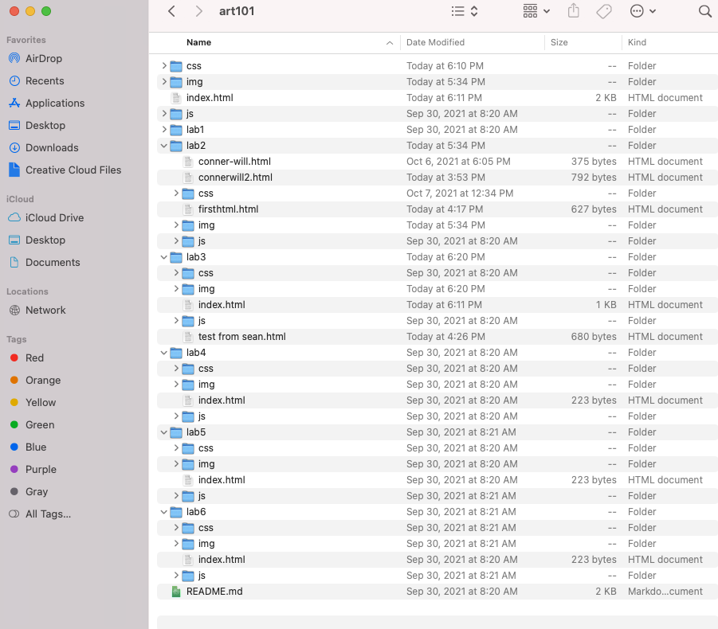

The purpose of this lab was to create an easy to navigate local file structure and add index.html files for each lab.
The file structure initial made sense with having index.html files in each lab folder, but the problem I kept having was accidently swtiching between different index.html files thinking it was my homepage. Initially I made my entire homepage in the lab3 index.html file so I had to move that one out of the lab3 folder and create a new index.html file for lab3, which is currently this page. Other than that, I had no real issues besides working on my speed with typing code.
This page is the index.html file that I created for lab 3. If you're currently reading this, it turned out successful.
Here is a screenshot of my file structure within Atom
Here is a screenshot of my source code for my homepage